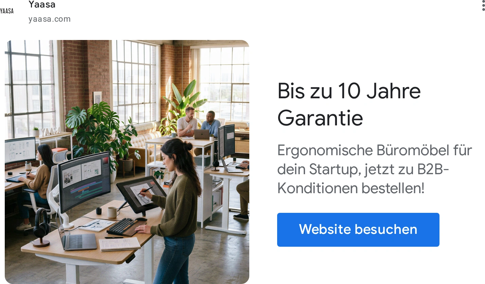

YAAS-GOOG-018

YAAS-GOOG-018YAAS-GOOG-018 · Yaasa · Google · 完整导出广告画面
品牌 / 平台：Yaasa / Google。A类真实广告。图像性质：完整导出广告画面。范围：办公室采购场景（未逐一确认图中桌型）。
图片像素：1428×838，比例714:419。文件：01_Original_Competitor_Ads/Yaasa/Google/YAAS-GOOG-018-v2.webp。
原广告来源。广告记录：YAAS-GAD-018。日期证据：德国日期筛选列表已核验；单条首次/最后日期未读取。首次：未读取；最后：未公开/未读取。首次/最后边界不表示连续投放。
视觉描述
Yaasa 的商务办公室素材，侧向广角，全景。主产品包围框占画面面积粗估约15–35%，主体在左，焦点为多人办公与保障信息。画面为木、绿、白、黑配色，大窗自然日光。多个成年人办公；职业角色为视觉推断。文字位置：右侧保证信息与 CTA。主要表达多工位、购买信任。
背景复杂度：高。留白：按原图文字区与产品区的分工理解，不逐像素复刻。主体包围框面积的人工粗估区间，含桌脚间空白，不是像素测量。
人物：成年人，办公角色与大致25–45岁为画面设定推断；不是已知身份。交互：多人在桌前看屏幕或交流。真实感判断：生活物件与空间关系可供参考；是否真实摄影/渲染未做鉴定。
创意类型：人物使用型、真实生活方式型。卖点：多工位、购买信任。
创意逻辑与需求
同一办公室图配不同信息属于消息变化，不构成新的场景创意。Furniwell 不能复制竞品保证期限。
购买需求：多工位、购买信任相关的选择与使用疑问；这是需求匹配推断，不是广告转化证明。
可借鉴与变化
参考什么：原图的侧向广角、全景与“多人办公与保障信息”的关系。同一办公室图配不同信息属于消息变化，不构成新的场景创意。Furniwell 不能复制竞品保证期限。
如何改变：多人办公室可改为两位独立工作者的不同任务：前桌坐着核对纸张，后桌站着开会；从侧门斜拍，并把信息区改成底部一行用途说明。改变人物动作、桌位关系和版式，避免复刻同一办公室照片。
匹配产品：Dual Ultra X 白色 180×80 cm; Dual Ultra X 白色 140×70 cm。
不照搬：Logo、品牌配色系统、评价/星级、获奖/认证、价格/保证、专有结构与未经核验功能；不得把竞品图片直接改标发布。
文字说明：标题/正文合计短摘录最多25词；纯图文内容见原图。未读取的标题/正文不补写。